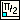

disponible dans la fenêtre grandeurs indique le mode sélectionné et permet la modification en cliquant dessus. Les calculs en degrés se font en degrés décimaux indépendamment de l'entrée ou l'affichage des données qui peut se faire en sexagésimal. Le mode par défaut peut être choisi par le menu options (onglet calcul), le logiciel est initialement en mode degré.Créé avec HelpNDoc Personal Edition: Éditeur de documentation CHM facile